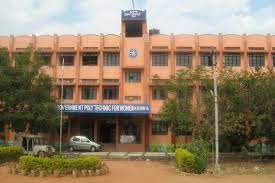
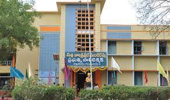
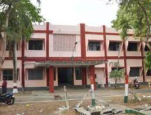
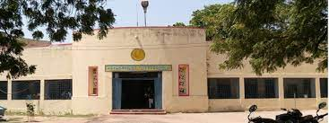

| Sl.no |
college Name |
scheme |
Location |
college |
| 1 |
Government Polytechnic for women,kadapa |
Government |
Kadapa |

|
| 2 |
Government Polytechnic Kakinada |
Government |
Kakinada |

|
| 3 |
Government Polytechnic Anathapur |
Government |
Anathapur |

|
| 4 |
Government Polytechnic Nandigama |
Government |
Kakinada |

|
| 5 |
Government Polytechnic Vishakapatnam |
Government |
Vishakapatnam |

|
| 6 |
Government Polytechnic jangareddyGudem |
Government |
West Godavari |

|
| 7 |
Government Polytechnic Nallapadi |
Government |
Guntur |

|
| 8 |
Government Polytechnic Kalyanadurgam |
Government |
Anathapuram |

|
| 9 |
Government Polytechnic Jamalamadugu |
Government |
Jamalamadugu |

|
| 10 |
Government Polytechnic Nandhyala |
Government |
Nandhyala |

|
| 11 |
Government Polytechnic Repalli |
Government |
Repalli |

|
| 12 |
Government Polytechnic Rampachodavaram |
Government |
West Godavari |

|
| 13 |
Government Polytechnic Adoni |
Government |
Kurnool |

|
| 14 |
Government Polytechnic Srikakulam |
Government |
Srikakulam |

|
| 15 |
Government Polytechnic Thadipathri |
Government |
Ananthapur |

|
| 16 |
Government Polytechnic Madanapalle |
Government |
Chittoor |

|
| 17 |
Government Polytechnic Vijayawada |
Government |
Vijayawada |

|
| 18 |
Government Polytechnic Kaladindi |
Government |
Kalikindi |

|
| 19 |
Government Polytechnic Proddatur |
Government |
Proddatur |

|